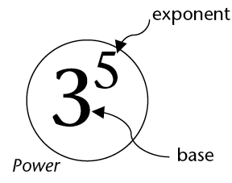
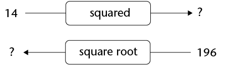
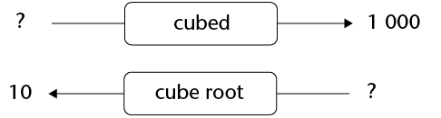

Exponents
In this chapter, you will learn about a very short way to describe calculations like this:
\(3 \times 3 \times 3 \times 3 \times 3 \times 3 \times 3 \times 3 \times 3 \times 3 \times 3 \times 3 \times 3 \times 3 \times 3 \times 3 \times 3 \times 3 \times 3\)
You already know a short way to describe calculations like this:
\(3 + 3 + 3 + 3 + 3 + 3 + 3 + 3 + 3 + 3 + 3 + 3 + 3 + 3 + 3 + 3 + 3\)
Quick squares and cubes
Again and again
-
How much is each of the following?
-
\(2 \times 2\)
\(3 \times 3\)
\(4 \times 4\)
\(5 \times 5\)
\( 6 \times 6\)
- \(7 \times
7\)
\(8 \times 8\)
\( 9 \times 9\)
\( 10 \times 10\)
\( 11 \times 11\)
\(12 \times 12\)
\(1 \times 1\)
Instead of saying "ten times ten", we may say "ten squared" and we may write \(10^2\).
-
Complete the tables.
\(2 \times 2\)
\(12 \times 12\)
\(8 \times 8\)
\(2^2\)
\(5^2\)
\(4^2\)
2 squared
10 squared
25
100
64
\(1 \times 1\)
\(9 \times 9\)
\(7^2\)
\(9^2\)
11 squared
3 squared
121
36
8 squared is 64, and 9 squared is 81.
-
What number squared is 25?
-
What number squared is 100?
-
What number squared is 64?
-
What number squared is 36?
-
-
Calculate:
-
\(10^2 + 5^2 + 2^2 \)
\( 5 \times 10^2 + 7 \times 10 + 3\)
-
\( 7 \times 10^2 + 3 \times 10 + 6\)
-
\( 2 \times
10^2 + 9 \times 10 +
6\)
-
How much is each of the following?
-
\(2 \times 2 \times 2\)
\(3 \times 3 \times 3\)
\(4 \times 4 \times 4\)
\( 5 \times 5 \times 5\)
\(6 \times 6 \times 6\)
-
\(7 \times 7 \times 7\)
\( 8 \times 8 \times 8\)
\(9 \times 9 \times 9\)
\(10 \times 10 \times 10\)
-
\(11 \times 11 \times 11 \)
\( 12 \times 12 \times 12\)
\(13 \times 13 \times 13\)
\( 1 \times 1 \times 1\)
Instead of saying "10 times 10 times 10", we may say "10 cubed" and we may write 103.
-
Complete the tables.
\(4 \times 4 \times 4\)
\(7 \times 7 \times 7\)
\(4^3\)
\(11^3\)
4 cubed
2 cubed
64
216
1 000
\(8 \times 8 \times 8\)
\(9^3\)
12 cubed
3 cubed
1
125
-
5 cubed is 125, and 9 cubed is 729.
-
What number cubed is 27?
-
What number cubed is 1 000?
-
What number cubed is 8?
-
What number cubed is 1?
-
What number cubed is 216?
-
What number cubed is 343?
-
-
Calculate:
-
\( 3 \times 10^3 + 7 \times 10^2 + 5 \times 10 + 6\)
\( 7 \times 10^3 + 7 \times 10^2+ 7 \times 10 + 7\)
-
\( 8 \times 10^3 + 1 \times 10^2 + 4 \times 10 + 2\)
- \(4 \times
10^3 + 3 \times 10^2 + 4 \times 10 +
9\)
-
\( 10 \times 10^2\)
\(10^2 \times 10^2\)
-
-
Can you think of two numbers, so that the square of the one number is equal to the cube of the other number?
-
Can you think of two numbers, so that when you add their squares, you get the square of another number?
The exponential notation
Repeated multiplication with the same number
-
Express each number below as a product of prime factors. Example: \(250 = 2 \times 5 \times 5 \times 5\)
-
35
-
70
-
140
-
280
-
81
-
625
5 is a repeated factor of 250. It is repeated 3 times.
-
Which numbers in question 1 have repeated factors? In each case, state what number is repeated as a factor and how many times it is repeated.
A number that can be expressed as a product of one repeated factor is called a power of that number.
Examples:
32 is a power of 2, because \(32 = 2 \times 2 \times 2 \times 2 \times 2\)
100 000 is a power of 10, because \(10 \times 10 \times 10 \times 10 \times 10 = 100 000\)
-
Express each number as a power of 2, 3, 5 or 10.
125
64
-
100
1 000
-
Calculate each of the following. You can use each answer to get the next answer.
-
\( 2 \times 2 \times 2 \times 2\)
-
\( 2 \times 2 \times 2 \times 2 \times 2\)
-
\( 2 \times 2 \times 2 \times 2 \times 2 \times 2\)
-
\( 2 \times 2 \times 2 \times 2 \times 2 \times 2 \times 2\)
-
\( 2 \times 2 \times 2 \times 2 \times 2 \times 2 \times 2 \times 2\)
-
\( 2 \times 2 \times 2 \times 2 \times 2 \times 2 \times 2 \times 2 \times 2\)
-
\( 2 \times 2 \times 2 \times 2 \times 2 \times 2 \times 2 \times 2 \times 2 \times 2\)
-
\( 2 \times 2 \times 2 \times 2 \times 2 \times 2 \times 2 \times 2 \times 2 \times 2 \times 2\)
-
\( 2 \times 2 \times 2 \times 2 \times 2 \times 2 \times 2 \times 2 \times 2 \times 2 \times 2 \times 2\)
-
\( 2 \times 2 \times 2 \times 2 \times 2 \times 2 \times 2 \times 2 \times 2 \times 2 \times 2 \times 2 \times 2\)
Because the factor 2 is repeated 5 times, 32 is called the fifth power of 2, or 2 to the power 5.
Similarly, 125 is the third power of 5.
125 can also be called "5 to the power 3" or "5 cubed".
-
The seventh power of 2 is shown in question 4(d).What power of 2 is shown in each of the following parts of question 4?
4(j)
-
4(i)
-
4(h)
-
4(f)
-
What power of what number is shown in each case below?
-
\( 15 \times 15 \times 15 \times 15 \times 15 \times 15 \times 15 \times 15\)
-
\( 12 \times 12 \times 12 \times 12 \times 12 \times 12 \times 12 \times 12 \times 12 \times 12 \times 12 \times 12\)
Instead of writing â5 to the power 6â we may write \(5^6\). This is called the exponential notation.
\(5^6\) means \(5 \times 5 \times 5 \times 5 \times 5 \times 5\).
\(5 \times 6\) means \(6 + 6 + 6 + 6 + 6\).
-
Write each of the numbers in question 3 in exponential notation.
-
Write each of the numbers in question 4 in exponential notation.
-
In each case write the number in exponential notation.
-
The fifth power of 5
-
The sixth power of 5
-
The third power of 4
-
6 to the power 4
-
4 to the power 6
-
5 to the power 15
\(3^5\) means \(3 \times 3 \times 3 \times 3 \times 3\).
The repeating factor in a power is called the base.
The number of repetitions is called the exponent or index.
\(3^1\) means 3. The base is 3 but there is no repetition.
Any number raised to the power 1 equals the number itself.
-
In each case below some information about a number is given. Each number can be expressed as a power. What is the number in each case?
-
The base is 5 and the index is 3.
-
The base is 10 and the exponent is 4.
-
The base is 20 and the exponent is 3.
-
Calculate each of the following:
-
\( 5 \times 5 \times 5 \)
-
\( 5 \times 5 \times 5 \times 5 \times 5\)
-
\( 5 + 5 + 5\)
-
\( 5 + 5 + 5 + 5 + 5\)
-
\( 5 \times 3\)
-
\( 5^3\)
-
Powers of different numbers
-
Complete this table of powers of 2. (You have already calculated these powers in the previous section.)
Exponent
1
2
3
4
5
6
7
8
9
Power of 2
2
4
8
16
Exponent
10
11
12
13
14
Power of 2
Calculate each of the following:
-
\(2^2- 2^1\)
\(2^3 -2^2\)
\(2^4 -2^3\)
\(2^5- 2^4\)
\(2^6- 2^5\)
\( 2^7 - 2^6\)
\(2^8 - 2^7\)
-
-
Describe what you notice about the differences between consecutive powers of 2.
Numbers that follow on each other in a pattern are called consecutive numbers.
-
Suppose you calculate the differences between consecutive powers of 3. Do you think these differences will be the consecutive powers of 3 again?
-
Complete this table of powers of 3.
Exponent
1
2
3
4
5
6
7
8
9
Power of 3
3
9
Exponent
10
11
12
13
14
Power of 3
Calculate each of the following:
-
\(3^2- 3^1\)
\(3^3 - 3^2\)
\(3^4 -3^3\)
\(3^5- 3^4\)
\(3^6- 3^5\)
\( 3^7 - 3^6\)
\(3^8 - 3^7\)
-
-
How do these numbers differ from what you expected when you answered question 3?
-
Divide each of your answers in 5(a) by 2.
-
If you observe anything interesting, describe it.
-
In questions 1 to 5 you have investigated the differences between consecutive powers of 2 and 3. You have observed certain interesting things about these differences. You will now investigate, in the same way, the differences between consecutive powers of 4.
-
Before you investigate, think a bit. What do you expect to find?
-
Do your investigation, and write a short report on what you find.
Exponent
Power of 4
-
Do what you did in question 6, but now for powers of 10.
Exponent
Power of 10
-
Squares and cubes
The number 9 is called the square of 3 because \(3 \times 3 = 9\). The number 3, called the base, is multiplied by itself. \({\bf3^2}\) is read as three squared or three to the power 2.
The number 27 is called the cube of 3 because \(3 \times 3 \times 3 = 27\). The base, the number 3, is multiplied by itself and again by itself. \({\bf3^3}\) is read as three cubed or three to the power 3.
Calculating squares and cubes
Squaring the number 2 means that we must multiply 2 by itself. It means we have to calculate \(2 \times 2\), which has a value of 4, and we write \(2 \times 2 = 4\).
-
In (a) to (f) below, the numbers in set B are found by squaring each number in set A. Write down the numbers that belong to set B in each case.
Set A
Set B
(a)
{1; 2; 3; 4; 5; 6; 7; 8}
(b)
{1; 3; 5; 7; 9; 11; 13}
(c)
{10; 20; 30; 40; 50}
(d)
{2; 4; 6; 8; 10; 12; 14}
(e)
{5; 10; 15; 20; 25}
(f)
{15; 12; 9; 6; 3}
Cubing the number 2 means that we must multiply 2 by itself, and again. It means we have to calculate \(2 \times 2 \times 2\), which has a value of 8, and we write \(2 \times 2 \times 2 = 8\).
Cube 1. Also cube 2 and 3.
-
Cube 5. Also cube 10 and 4.
-
In (a) and (b) below, the numbers in set B are found by cubing each number in set A. Write down the numbers that belong to set B in each case.
-
Set A: {1; 2; 3; 4; 5; 6; 7; 8}
Set B:
-
Set A: {10; 20; 30; 40; 50}
Set B:
-
-
Write down the squares of the first 15 natural numbers.
-
What do you observe about the last digit of each square number?
-
Give an example of a number that ends in one of the digits you have written above that is not a square.
The number 64 can be written both as a square and a cube.
\(64 = 8^2\) and \(64 = 4^3\)
The number 17 is neither a square nor a cube.
-
-
Are the following numbers squares, cubes, both or neither? Just write square, cube, both or neither where appropriate. Compare your answers with the answers of two classmates.
-
64
1
121
-
1 000
512
400
-
65
216
169
-
The square root and the cube root
The inverse to finding the square of a number is to find its square root.
The question, âWhat is the square root of 25?â is the same as the question, âWhat number, when squared, equals 25?â The answer to the question is 5 because \(5 \times 5 = 25\).
Determining what number was squared
-
What number, when squared, equals 9? Explain.
-
What is the square root of 49? Explain.
-
What number, when squared, equals 81? Explain.
-
What number, when squared, equals 225? Explain.
-
What is the square root of 121? Explain.
-
What number must be squared to get 169? Explain.
-
Complete the diagrams below.

The inverse operation to finding the cube of a number is to find its cube root.
The question, âWhat number, when cubed, equals 125?â is the same as the question, âWhat is the cube root of 125?â
The answer to the question above is 5 because \(125 = 5 Ã 5 Ã 5\).
Determining what number was cubed
What number, when cubed, equals 27? Explain.
-
What is the cube root of 343? Explain.
-
What number, when cubed, equals 8? Explain.
-
What is the cube root of 1 000? Explain.
-
What number, when cubed, equals 512? Explain.
-
What number produces the same answer when it is squared and when it is cubed?
-
Complete the diagrams below.

Calculating square roots and cube roots
Complete the table. The first one has been done for you.
Number
Cube root
Check your answer
(a)
8
2
\(2 \times 2 \times 2 = 8\)
(b)
27
(c)
64
(d)
125
(e)
216
(f)
1 331
(g)
1 000
(h)
512
(i)
8 000
Complete the table. The first one has been done for you.
Number
Square root
Check your answer
(a)
9
3
\(3 \times 3 = 9\)
(b)
1 600
(c)
144
(d)
196
(e)
625
(f)
900
(g)
16
(h)
400
(i)
121
The symbol \(\sqrt{25}\)can be used to indicate the square root of 25. So we can write \(\sqrt{25}=5\). The symbol \(\sqrt[3]{125}\) can be used to indicate the cube root of 125. So we can write \(\sqrt[3]{125}= 5\)
What mathematical symbol can be used to indicate each of the following?
-
The square root of 169
-
The cube root of 343
-
The square root of 2 500
-
The cube root of 729
-
The cube of 25
-
The square of 25
By agreement amongst mathematicians, the symbol \(\sqrt{}\) means the square root of the number that is written inside the symbol. So we normally write \(\sqrt{4}\) instead of \(\sqrt[2]{4}\)
For the cube root, however, the number 3 outside of the root sign \(\sqrt[3]{}\) must be written in order to distinguish the cube root from the square root.
-
-
Find the values of each of the following. The first one has been done for you. Check your answers.
Value
Check your answer
(a)
\(\sqrt{64}\)
8
\(8 \times 8 = 64\)
(b)
\(\sqrt{49}\)
(c)
\(\sqrt{36}\)
(d)
\(\sqrt{784}\)
(e)
\(\sqrt{2 025}\)
(f)
\(\sqrt{324}\)
Find the values of each of the following. The first one has been done for you. Check your answers.
Value
Check your answer
(a)
\(\sqrt[3]{8}\)
2
\(2 \times 2 \times 2 = 8\)
(b)
\(\sqrt[3]{64}\)
(c)
\(\sqrt[3]{512}\)
(d)
\(\sqrt[3]{1}\)
(e)
\(\sqrt[3]{216}\)
(f)
\(\sqrt[3]{125}\)
Comparing numbers in exponential form
Bigger, smaller or equal?
Which is bigger?
\(2^5\) or \(5^2\)
-
\(3^4\) or \(4^3\)
-
\(2^3\) or \(6^1\)
We can use mathematical symbols to indicate whether a number is bigger, smaller or has the same value as another number.
We use the symbol > to indicate that the number on the left-hand side of the symbol is bigger than the one on the right-hand side. The number 5 is bigger than 3 and we express this in mathematical language as 5 > 3.
The symbol < is used to indicate that the number on the left-hand side of the symbol is smaller than the number on the right-hand side. The number 3 is smaller than 5 and we express this mathematically as 3 < 5.
When numbers have the same value we use the equal sign, =. The numbers \({\bf2^3}\) and 8 have the same value and we write this as \({\bf2^3}= 8\).
Use the symbols =, < or > to make the following true. Check your answers.
-
\(\sqrt[3]{64}\) ☐ \(\sqrt{16}\)
\(3^3\) ☐ \(4^2\)
-
6 ☐ \(\sqrt{36}\)
-
\(\sqrt[3]{125}\) ☐ \(\sqrt{100}\)
\(3^3\) ☐ \(\sqrt[3]{216}\)
\(2^4\) ☐ \(3^4\)
\(2^3\) ☐ \(3^2\)
\(\sqrt[3]{1}\) ☐ \(\sqrt{1}\)
\(9\) ☐ \(3^3\)
\(100\) ☐ \(15^2\)
-
-
Which is bigger, \(1^ {100}\) or \(100^1\) ? Explain.
-
What is the biggest number you can make with the symbols 4 and 2?
-
Two whole numbers that follow on each other, like 4 and 5, are called consecutive numbers. Is the difference between the squares of two consecutive whole numbers always an odd number?
Be smart when doing calculations
Our knowledge of squares can help us to do some calculations much quicker. Suppose you want to calculate 11 \times 12.
\(11^2\) has a value of 121. We know that \(11 \times 11 = 121\).
\(11 \times 12\) means that there are 12 elevens in total.
So
\( \begin{align} 11 \times 12 &= 11 \times 11 + 11 \\ &= 121 + 11 \\ &= 132 \end{align}\)
Suppose you want to calculate \(11 \times 17\).
\(11 \times 17 = 17\) elevens in total = 11 elevens + 6 elevens
Well, we know that \(11 \times 11 = 121\)
So
\( \begin{align} 11 \times 17 &= 11 \times 11 + 6 \times 11 \\ &= 121 + 66 \\ &= 187 \end{align}\)
Now do the following calculations in your exercise book, using your knowledge of square numbers.
\(11 \times 19\)
\(13 \times 16\)
\(15 \times 18\)
\(12 \times 18\)
Arranging numbers in ascending and descending order
The numbers 1, 4, 9, 16, 25, ... are arranged from the smallest to the biggest number. We say that the numbers 1, 4, 9, 16, 25, ... are arranged in ascending order.
The numbers 25, 16, 9, 4, 1, ... are arranged from the biggest to the smallest number. We say that the numbers 25, 16, 9, 4, 1, ... are arranged in descending order.
Arrange the following numbers in ascending order:
-
\(\sqrt[3]{64} ; 3^2 ; \sqrt{64} ; \sqrt{36}\)
-
\(\sqrt{225} ; \sqrt[3]{729} ; \sqrt[3]{1000};2^2\)
-
\(\sqrt[3]{1} ; 0 ; 100 ;10 ^3\)
-
\(1^2 ; 2^3 ; 4^2 ;5^2\)
-
-
Arrange the following numbers in descending order:
-
\(\sqrt[3]{216} ; \sqrt[3]{10} ; 2^5 ; 20\)
-
\(10^3 ; \sqrt[3]{20^3} ; \sqrt{144};12^2\)
-
\(\sqrt{121}; \sqrt[3]{125};11^2;5^3\)
-
\(1^5 ; 2^4 ; 7^2 ;6^3; 5^3\)
-
Calculations
The order of operations
When a numerical expression includes multiple operations, for example both multiplication and addition, what you do first makes a difference.
It is important to know the correct order in which operations in a numerical expression should be done.
If there are no brackets in a numerical expression, it means that multiplication and division must be done first, and addition and subtraction only later. For example, the expression \(12 + 3 \times 5\) means "multiply 3 by 5; then add 12". It does not mean "add 12 and 3; then multiply by 5".
If you wish to specify that addition should be done first , that part of the expression should be put in brackets. For example ,if you wish to say " add 5 and 12; then multiply by 3", the numerical expression should be \(3 \times (5+12)\) or \((5+12) \times 3\).
Here is another example: The expression \(10 - 6 \div 3\) means "divide 6 by 3; then subtract the answer from 10". It does not mean " subtract 6 from 10; then divide by 3".If you wish to specify that subtraction should be done first, that part of the expression should be put in brackets. The numerical expression \((10-6) \div 3\) means " subtract 6 from 10; then divide the answer by 3".
Writing numerical expressions in words
Write each of the following numerical expressions in words:
\(5 \times 2^2 +3 \)
-
\(5^2 \times (2 + 3)^2\)
-
\(\sqrt{36 + 64} + 3^3 \)
-
\(\sqrt{16} + \sqrt{9}\)
-
\(10^3 -9^3\)
-
\((18 \div \sqrt{9})^2\)
-
\( \frac{26 - \sqrt{4}}{6}\)
Calculations with exponents
Do these calculations without using a calculator.
Calculate:
-
\(2^4 + 1^4\)
-
\((2+1)^4\)
\(2^3 + 3^3 + 4^3\)
\(2^3 + 5^3 \times 3\)
\(12^2 \div 2^3 \)
\(\frac{12 + 2 \times 3^2}{4^2 - 1^3}\)
-
Do the calculations below and then say which expression has the same value as \(2^5\).
-
\(2^3 +2^2\)
\(2^3 \times 2^2\)
-
-
Do the calculations below and then say which expression has the same value as \(5^4\).
-
\(5^3 + 5^1\)
\(5^3 \times 5^1\)
-
-
Which of the expressions below has the same value as \(8^4\) ?
-
\(2^4 \times 4^4\)
\(12^2 +5^2\)
-
-
Calculate the following:
-
\(4^2 +3^2\)
\(12^2 + 5^ 2\)
-
-
Continue this list to find the values of the "powers of 2" from \(2^1\) to \(2^{12}\). \(2^1=2 ; 2^2=4 ; 2^3 = 8 ; 2^4 =16 ; \)
-
Do you notice a pattern in the last digit of the numbers? Write down the pattern in your own words.
-
Use the pattern to predict the last digit of the following values. (You should not need to actually calculate the values in full.)
\(2^{20}\)
\(2^ {1002}\)
-
Calculations involving square roots and cube roots
Calculate each of the following without using a calculator:
-
\(\sqrt{64} + \sqrt{36}\)
\(\sqrt{9+16}\)
\(\sqrt{25}\)
\(\sqrt{100}\)
\(\sqrt{64 + 36}\)
\(\sqrt{9} + \sqrt{16}\)
-
-
Say whether each of the following is true or false. Explain your answer. (Note: \(\ne\) in question (d) means "is not equal to")
-
\(\sqrt{64 +36} = \sqrt{64} + \sqrt{36}\)
\(\sqrt{16}+ \sqrt{9} = \sqrt{16+9}\)
\(\sqrt{100} = \sqrt{64} + \sqrt{36}\)
\(\sqrt{25} \ne \sqrt{9} + \sqrt{16}\)
\(\sqrt{9 \times 9} = 9\)
\(\sqrt[3]{2 \times 2 \times 2} = 2\)
\(\sqrt{169} - \sqrt{25} = 8\)
\(\sqrt{169 -25} =12 \)
-
-
Calculate each of the following without using a calculator:
-
\(2 + \sqrt[3]{8} + (3+2)^2\)
\(2 + \sqrt[3]{8} + 3^2 + 2^2\)
\(2 + \sqrt[3]{8} + 2^5 - 2^3\)
\(\frac{5+4 \times ( \sqrt{169} - 2^3)}{5}\)
\((15 - \sqrt{25})^3\)
\(\frac{28 - 24 \div \sqrt{4}}{(\sqrt[3]{27}+1)^2}\)
-
-
Write in expanded form: \( 6^6\)
Write in exponential form: 14 to the power 9
-
Rewrite the numbers from the smallest to the biggest: \(3^4 ; 2^5 ; 4^3 ; 10\)
-
Say whether each of the following is true or false. Explain your answer.
-
\(\sqrt{64+36}= \sqrt{64} + \sqrt{36}\)
-
\(\sqrt{25} + \sqrt{9} = \sqrt{59 + 5}\)
-
Calculate:
-
\(3^3 \times 2^2\)
\(\sqrt{144} + \sqrt{81}\)
\(11^2 + 5^2 - \sqrt{144}\)
\((14-12)^4 \div \sqrt[3]{8} \)
\(9^2 - 4^2 \times 3\)
\(7 + \sqrt[3]{125} +1^5 -2^3\)
\((\sqrt[3]{27} +\sqrt{64})^2\)
\((\sqrt{16+9} \div 5^1) \times 93\)
\(\frac{9^2 + 12^2 + 5^3 + 650}{\sqrt[3]{125} \times 10^2}\)
\(\frac{6^3 -(\sqrt{169})^2 + \sqrt{8}}{7^2 \times1^9}\)